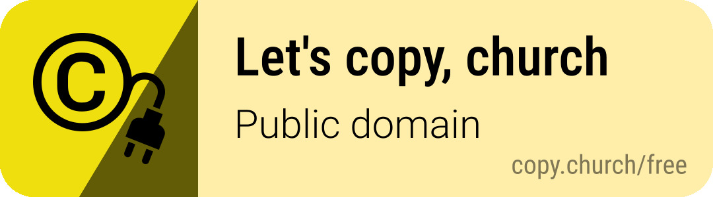

Common Weal Press
The Christian Inheritance. Freely Given.
This edition is published by Common Weal Press and dedicated to the public domain under the Creative Commons CC0 1.0 Universal Public Domain Dedication. You are free to copy, distribute, modify and use it for any purpose, without asking. creativecommons.org/publicdomain/zero/1.0

Freely you have received; freely give. — Matthew 10:8
Printed copies are sold at the cost of printing: no revenue or royalty is made from them.
The text is that of Samuel M’Millan’s edition of Boston’s Whole Works (Aberdeen, 1848), transcribed from the printed page. The titles of the three parts are this edition’s.
Free ebooks, PDFs and at-cost printed copies:
Corrections and questions: books@commonwealpress.org